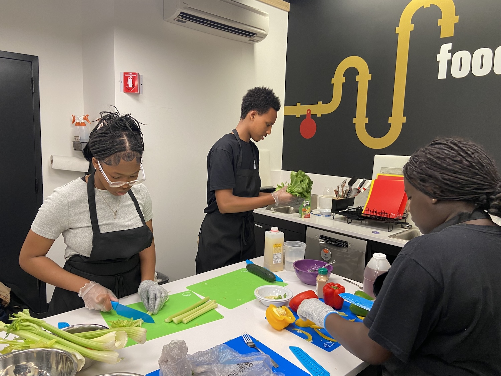
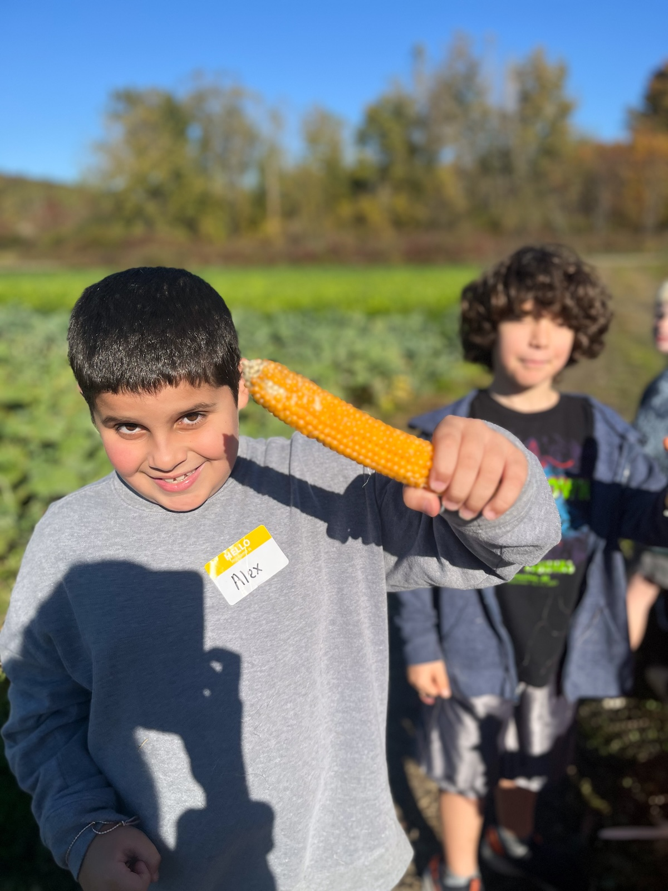
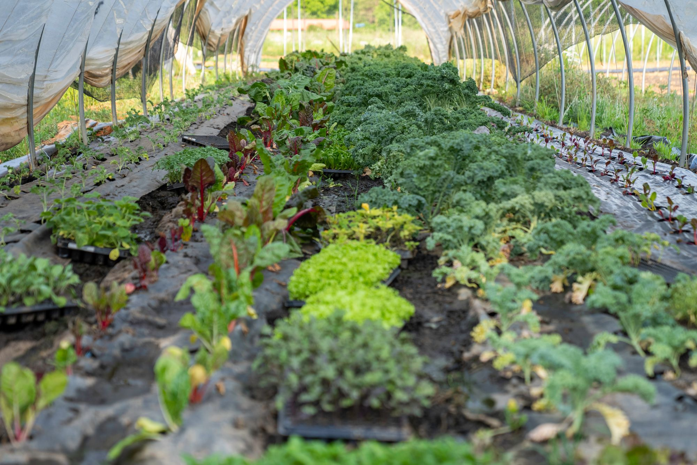

TAKE ACTION
The Joint Committee on Education voted unanimously to pass the Farm to School bill out of committee. It is now in the Ways and Means Committees. With your continued engagement, we can help pass the bill this session.
ACTION ALERT
“An Act Establishing the Massachusetts Farm to School Program” (S.311 in the Senate and H.565 in the House) was introduced in the Massachusetts legislature by Representatives Duffy and Vargas and Senator Comerford. The bill would codify the farm to school FRESH Grant program and establish a local food incentive within the Department of Elementary and Secondary Education. You can help move this bill forward by asking your state legislators to advance the bill.
Your advocacy is working! The Joint Committee on Education voted unanimously to pass the bill out of committee. It is now in the Ways and Means Committees. With your continued engagement, we can help pass the bill this session. If your legislator is on the House or Senate Ways and Means Committee, your advocacy is especially critical at this time.
We’ve drafted the email — just click the take action button below to customize and send to your legislators. We encourage you to personalize the email by sharing your own story and why you believe that more farm to school activity will be good for students, for farmers, and for communities. If you are a current recipient of the MA FRESH grant or participated in the Northeast Food for Schools incentive, please be sure to note the impact of these programs on your school.
Curious if your legislators are co-sponsors of this bill? Check the bill’s website (S.311 / H.565). If they have signed on, you can include a thank you & express your support.
ABOUT THE BILL
The bill would establish a permanent Massachusetts Farm to School Program consisting of a competitive grant program (the existing MA FRESH grant) and a local food incentive (similar to the current Northeast Food for Schools Program). Together these two initiatives would help more schools and early education programs provide students with healthy, locally grown foods in school meals while offering new markets for our farmers and fishermen. The initiatives would also increase access to experiential education, such as school gardens and would support the infrastructure investments, staff training, and educational initiatives that lead to farm to school program success and sustainability.

BUILD A RELATIONSHIP
A one-on-one meeting is the single most powerful way to keep farm to school on your legislator's radar — and seeing it in action makes the case even stronger.
Find your legislator. Look up your state rep and senator on the MA Legislature site.
Request the meeting. Use our tips for requesting a meeting and a sample agenda & talking points to lead the conversation.
Invite them to your school. A cafeteria visit or a school-garden lesson is one of the most effective ways to create a farm to school champion. The National Farm to School Network hosting toolkit walks you through how — no big event required.
Met with your legislator? Let us know so we can track our progress.

COALITION MEETINGS
Your voice is needed to make this vision of a healthy, resilient, and equitable school food environment a reality.
The Massachusetts Food for Massachusetts Kids Coalition meets on the first Thursday of the month to move this advocacy effort forward. Sign up to receive emails about these meetings and other updates.
FOR EDUCATORS
Are you an educator? Do you work with students in or out of a school setting? Help them advocate for Farm to School in their communities by encouraging them to fill out a Farm to School Student Advocacy Form! Send the forms back to us and we’ll deliver them to Massachusetts legislators from your community. Send forms to Mass. Farm to School, P.O. Box 213, Beverly, MA 01915 or scan and email dena@massfarmtoschool.org.
SPREAD THE WORD
Your voice multiplies when you bring others along. Help us reach more advocates, more legislators, and more communities across the Commonwealth.
Recruit co-sponsors. Encourage friends and colleagues to ask their legislators to co-sponsor the farm to school grant bill.
Grow the coalition. Help us build a larger, more diverse group of advocates advancing MA Food for MA Kids.
Share your why. Tell your legislators why farm to school matters in your community.
